Link
Personagem
Link (Rinku - リンク) é o protagonista da série Legend of Zelda.
Ele é geralmente retratado como um corajoso garoto ou adolescente com uma vestimenta verde, o qual
abandona sua casa e seus parentes para perseguir o seu destino: lutar contra as forças do mal que
ameaçam a terra. Ao longo de sua aventura, Link derrota legiões de monstros do mal, explora vastas
terras, ajuda a qualquer um que ele encontre em dificuldades, percorre masmorras mortais, e coleta
itens míticos enquanto prossegue sua busca por justiça e paz. No final, ele ganha a o poder necessário
para impedir seu principal inimigo e torna-se um herói lendário. Ele é considerado um personagem icônico
dos vídeo games e o próprio símbolo da franquia Zelda, e continua sendo um dos protagonistas mais populares
dos vídeo games.
- Aparência
As características físicas de Link variam de jogo para jogo, embora ele geralmente tenha o cabelo claro
(que vão do marrom ao loiro, e até mesmo laranja), olhos azuis, e uma estatura mediana. Outros personagens,
por vezes, consideram ele como alguém bonito. É improvável que a idade de Link ultrapasse dezenove anos em
qualquer ponto na série até agora. Em muitos jogos da série, Link é o portador da Triforce da Coragem. Vários
jogos mencionam uma marca da Triforce na mão esquerda de Link, a qual o identifica como um herói escolhido ou o
detentor da Triforce da Coragem. Encarnações adolescentes de Link possuem físicos bem construídos enquanto as
versões mais jovens dele são, pelo menos, de tamanho moderado. É mostrado que o Link é, no mínimo, da mesma altura
que os Hylianss normais em torno de sua idade (com exceção do Link de Twilight Princess, que parece ser menor do que
a maioria dos Hylianos próximos da sua idade).
Curiosamente, Link possui uma semelhança com o Peter Pan, já que ambos são parecidos com elfos, usam roupa verde,
lutam com espadas, e são por vezes acompanhados por uma Fada. Link também luta contra sua sombra em alguns jogos,
como o Link das Trevas ou o Link das Sombras, assim como Peter. Surpreendentemente, Shigeru Miyamoto, o criador da
série Legend of Zelda, afirmou que ele usou Peter Pan como um pouco de inspiração para o projeto de Link em The
Legend of Zelda.
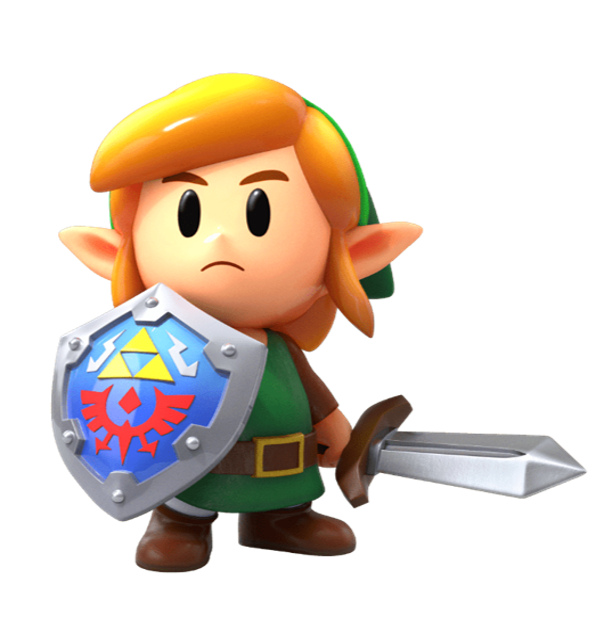
- Personalidade
Uma peculiaridade de Link, bem como de outros personagens, é as várias encarnações diferentes ao longo da série
Legend of Zelda. Está implícito que ele é um pouco sonolento ou preguiçoso, já que em algum ponto próximo ao início
de cada jogo, com exceção dos dois primeiros, ele está dormindo ou cochilando.
Como Link não costuma ser mostrado falando, sua personalidade é determinada principalmente por suas ações ou comentários
dos outros sobre ele. É mostrado que o Link possui características básicas encontradas em um personagem heroico; bravura,
truísmo, compaixão, sabedoria e bondade. Ele até mesmo salva outros que anteriormente eram seus inimigos. Estas
características (juntamente com a sua pureza) o permite empunhar a Triforce completa em alguns dos jogos sem nenhum problema.
Ele também é leal para com os mais próximos a ele. Isto é frequentemente mostrado em cada série, como muitas vezes ele
protege Zelda e outros de qualquer mal que os ameaça.
- Habilidades
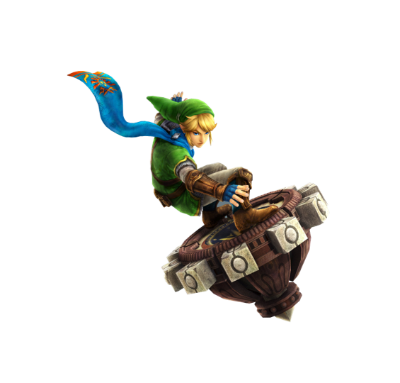
Em cada uma de suas aventuras, Link cresce para se tornar proficiente com a Espada, sua principal forma de ataque.
Ele empunha sua espada na mão esquerda na maioria dos jogos (embora existam exceções). A Espada Mestra, uma lâmina
lendária que Link empunha ao longo de várias aventuras, tornou-se um sinônimo da série como o próprio Link. Link também
é extremamente habilidoso com uma grande variedade de instrumentos musicais mágicos, sendo capaz de usá-los imediatamente
após os obter. Isso também se estende aos seus outros itens e armas na série. Com as suas habilidades e suas armas,
Link geralmente torna-se forte o suficiente para derrotar todos os inimigos que o ameaçam. Ele também é muito inteligente,
já que ele pode rapidamente entender a mecânica complexa por trás das coisas ou descobrir o ponto fraco do adversário para
usar contra ele.
Em algumas de suas aventuras, Link é mostrado como tendo certo grau de aptidão com combate corpo a corpo (como a luta de
sumô de Gorons em Twilight Princess), bem como um grau de força sobre-humana (levantar objetos e seres pesados, como o
sabre de Koloktos, e os balançar sem nenhum problema em Skyward Sword); no entanto, ele é algumas vezes retratado como
alguém completamente indefeso, sem uma espada ou outra arma, como mostrado em Wind Waker: quando ele perde sua espada na
Fortaleza Abandonada, ele dependeu de sua furtividade e das armas dos inimigos para passar, e se ele for visto, ele se
rende sem lutar. Isso pode ser explicado pelo fato de que o Link em Wind Waker (assim como algumas outras encarnações dele)
era uma pequena criança, enquanto que os de The Adventure of Link, Ocarina Of Time (na segunda metade da história), Twilight
Princess e Skyward Sword já estavam na adolescência e, portanto, mais fortes e mais hábeis do que as suas contrapartes
pré-adolescentes. Um bom exemplo desta comparação seria como Link era incapaz de derrotar Bubbles no jogo original, mas pode os
derrotar em The Adventure of Link.
Linha do Tempo
Muito complexo explicar a Linha do Tempo das aventuras do Link, ele tem muitas ramificações em suas reencarnações, por isso resolvi apresentar a Linha do Tempo de lançamentos dos jogos.
1986
The Legend of Zelda
- Publicado pela Nintendo para o console Nintendo Entertainment System
Situado na terra da fantasia de Hyrule, os centros da trama, um garoto chamado Link, o protagonista jogável, que visa a resgatar a Princesa Zelda do antagonista primário, Ganon, recolhendo os oito fragmentos da Triforce da Sabedoria, um poderoso artefato. 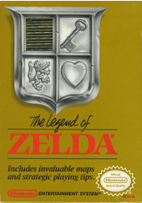
1987
Zelda II: The Adventure of Link
- Publicado pela Nintendo para o console Nintendo Entertainment System
Apresenta áreas de side-scrolling em um mapa superior
de cima para baixo, em vez da constante perspectiva de cima para baixo do título anterior, que apenas
usava o side-scrolling em algumas áreas do porão das masmorras.

1991
The Legend of Zelda: A Link to the Past
- Publicado pela Nintendo para o console Super Nintendo Entertainment System
A história é uma prequência de jogos anteriores da série, envolvendo os ancestrais de Link e da princesa Zelda. O jogo usa uma perspectiva de cima para baixo 3/4 semelhante ao do original The Legend of Zelda, deixando para trás os elementos de side-scrolling de Zelda II: The Adventure of Link. 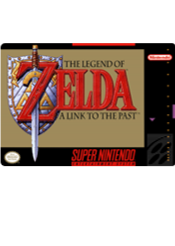
1993
The Legend of Zelda: Link's Awakening
- Publicado pela Nintendo para o console Game Boy
A atual encarnação de Link sofre um naufrágio durante uma tempestade e fica preso na Ilha Koholint, um local guardado por uma divindade semelhante a uma baleia chamada Peixe do Vento. Ele então parte em uma jornada com o objetivo de recuperar oito instrumentos musicais mágicos que juntos irão acordar o dormente Peixe do Vento e lhe permitir escapar da ilha. 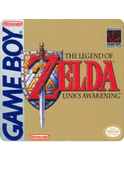
1998
The Legend of Zelda: Ocarina of Time
- Publicado pela Nintendo para o console Nintendo 64
Link viaja através do tempo e percorre calabouços para despertar os Sete Sábios, os quais têm o poder de selar Ganondorf para sempre. A música desempenha um papel importante: para progredir, o jogador deve aprender a tocar várias canções numa ocarina; o jogo foi responsável por aumentar o interesse por esse instrumento. 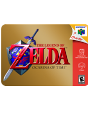
2000
The Legend of Zelda: Majora's Mask
- Publicado pela Nintendo para o console Nintendo 64
O jogo diferencia-se do resto da série por não se passar em Hyrule e não ser centrado na Triforce e na Princesa Zelda. A história se desenrola em Termina, uma espécie de "mundo paralelo", em que o protagonista Link deve tentar impedir que a lua colida com o planeta, provocando o apocalipse, após ser tirada da sua órbita pelo mascarado Skull Kid. 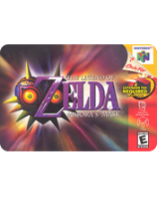
2001
The Legend of Zelda: Oracle of Seasons and Ages
- Publicado pela Nintendo para o console Game Boy Color
Em Seasons , a Triforce transporta Link para a terra de Holodrum, onde ele vê Onox sequestrar Din , o Oráculo das Estações. Em idades , a Triforce transporta Link para Labrynna, onde Veran possui Nayru. O enredo principal é revelado quando o jogador termina os dois jogos. 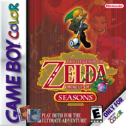
2002
The Legend of Zelda: A Link to the Past and Four Swords
- Publicado pela Nintendo para o console Game Boy Advance
Concentra-se no herói Link em uma jornada para salvar a terra de Hyrule, impedir a volta de Ganon e libertar as sete donzelas descendentes dos antigos sábios. 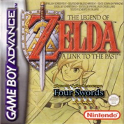
The Legend of Zelda: The Wind Waker
- Publicado pela Nintendo para o console GameCube
A história segue o protagonista Link enquanto explora um arquipélago no meio de um vasto oceano à procura de sua irmã, que foi sequestrada e está nas mãos do maligno feiticeiro Ganon. Em sua jornada ele é auxiliado por uma capitã pirata chamada Tetra e por um barco falante chamado Rei dos Leões Vermelhos. 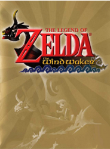
2004
The Legend of Zelda: Four Swords Adventures
- Publicado pela Nintendo para o console GameCube
Em uma noite de tempestade, a Princesa Zelda e as donzelas do santuário têm medo de a razão para esses eventos ser do selo de Vaati estar enfraquecendo. Ela convoca Link e o leva para o castelo para que ele possa protegê-la e as outras donzelas enquanto eles abrem o portal para o Four Sword Sanctuary. Quando o fazem, no entanto, uma figura sombria surge do portal. 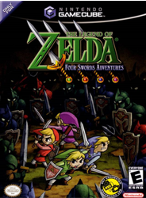
The Legend of Zelda: The Minish Cap
- Publicado pela Nintendo para o console Game Boy Advance
Muitos anos antes dos eventos de The Minish Cap, uma raça de seres minúsculos, os Minish ajudaram a salvar Hyrule ao entregar a um garoto uma roupa verde, brilho dourado e a épica espada denominada Picori Blade para derrotar uma ameaça que surgira. 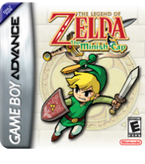
2006
The Legend of Zelda: Twilight Princess
- Publicado pela Nintendo para os consoles GameCube e Wii
A historia foca no protagonista Link, que tenta prevenir que sua terra natal Hyrule seja engolfada por uma dimensão paralela corrompida conhecida como Twilight Realm, Reino do Crepúsculo em tradução livre. Para isso, Link obtêm as formas tanto de um hyliano quanto a de um lobo, e é ajudado por uma criatura misteriosa chamada Midna. 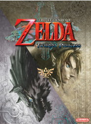
2007
The Legend of Zelda: Phantom Hourglass
- Publicado pela Nintendo para o console Nintendo DS
A história do jogo segue a de The Wind Waker, com foco na jornada do protagonista da série Link para salvar seu amigo Tetra do antagonista da história, Bellum, com a ajuda do Capitão Linebeck e seu navio, o SS Linebeck. 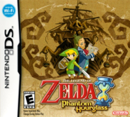
2009
The Legend of Zelda: Spirit Tracks
- Publicado pela Nintendo para o console Nintendo DS
Cem anos depois dos acontecimentos de The Legend of Zelda: Phantom Hourglass, o descendente de Link se prepara para ser nomeado maquinista de trem pela Princesa Zelda. Logo após a cerimônia, Zelda pede a Link que vá ao seu quarto, pois quer conversar com ele sobre algo muito sério. 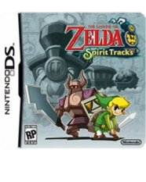
2011
The Legend of Zelda: Skyward Sword
- Publicado pela Nintendo para o console Wii
De acordo com a lenda, três deusas antigas conferiram um grande poder capaz de conceder qualquer desejo: a Triforce. O Rei Demônio Demise queria a Triforce e em sua procura por esse poder ele acabou devastando boa parte da terra. 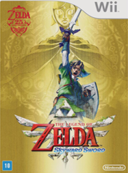
2013
The Legend of Zelda: A Link Between Worlds
- Publicado pela Nintendo para o console Nintendo 3DS
Uma antiga lenda hiruliana conta os eventos anteriores a A Link Between Worlds. Ganon procurou dominar o reino usando o poder da sagrada Triforce , mas foi derrotado por um herói lendário e selado pelos Sete Sábios. A Triforce foi dividida em três partes para evitar que o mal se levantasse novamente. 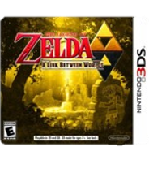
2015
The Legend of Zelda: Tri Force Heroes
- Publicado pela Nintendo para o console Nintendo 3DS
O jogo cooperativo de ação e aventura no qual três jogadores controlam versões de cores diferentes do protagonista da série Link e unem forças para lutar contra inimigos e resolver quebra-cabeças. 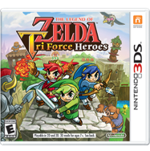
2016
The Legend of Zelda: Breath of the Wild
- Publicado pela Nintendo para os consoles Wii U e Nintendo Switch
No passado, por repetidas vezes, o mal conhecido como Calamity Ganon ameaçou o Reino de Hyrule, sempre sendo derrotado pela princesa Zelda, descendente da deusa Hylia, com a ajuda de seu fiel protetor Link. Hyrule com o passar dos séculos tornou-se uma civilização avançada, protegida por quatro Feras Divinas e por um exército de Guardiões, armas robóticas autônomas. 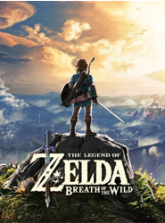
Músicas
The Legend of Zelda é uma franquia multifacetada. Ao longo de suas três décadas de existência, Hyrule nos convidou
a explorar suas claustrofóbicas masmorras e cavalgar sobre seus campos verdejantes. Rimos com as peripécias de Tingle
e lamentamos a dissolução de Koholint Island ao final de Link’s Awakening.
É por esse aspecto da diversidade que a música da série apresenta não apenas um caráter de pluralidade estilística,
mas também se insere como elemento fundamental a seu gameplay. A referência musical do compositor Koji Kondo é marcada pelo ocidentalismo, o que serviu de estratégia até mesmo para
estabelecer relações mais firmes com os jogadores da parte oeste do mundo. O plano original do compositor para o tema
do game, inclusive, era arranjar a melodia do Bolero (1928) de Maurice Ravel para o chip sonoro do Famicom.
Essa ideia de variedade musical cresceria em proporção com o tamanho dos títulos subsequentes da série. Em Ocarina of
Time, por exemplo, podemos visitar o árido deserto que abriga o Spirit Temple, como também podemos mergulhar nas
águas do Lake Hylia. Se o flamenco andaluz de Gerudo Valley nos remete a um determinado lugar e sua cultura, o mesmo
ocorre de forma discrepante com o tema de Death Mountain ou de Zora’s Domain, por exemplo. Aqui esta uma playlist que escuto bastante,
para trabalhar, estudar, fazer projeto da semana até mesmo para metitar.
Galeria de Imagens
- FanArt by Nemésio
Aqui está alguns rabiscos que fiz durante minha infância/adolescência:
Jogo da Minha Vida
- The Legend of Zelda: Ocarina Of Time
Ok, sou suspeito para falar dessa série, e jogos da Nintendo em geral, mas na boa; existem poucos jogos que definem uma geração e Ocarina of Time definiu,
pelo menos, duas. Nenhum jogo single player apresentou até hoje um fator replay tão cativante, nenhuma história envolvendo viagem no tempo foi tão bem
trabalhada e, acima de tudo, poucos jogos foram tão originais quanto ele.
Por isso The Legend of Zelda: Ocarina of Time para mim terá sempre meu respeitado, sua nota de 99 no Metacritic não e por acaso.
Sua originalidade de enredo, jogabilidade, controles, arte e level design, sejam simples ou não, servem de referência até hoje no mundo dos games.
Perdi as contas de quantas vezes já joguei, realmente não me canso desse jogo sempre me remete boas lembrança da minha infância, foi meu primeiro contado
com um jogo e posso dizer que dei sorte que foi com essa obra prima.
Lucas (ou quem estiver vendo isso)! Não sei se você já jogou, se conhece ou não, mas de uma chance a si mesmo e jogue esse game cara! apanhei um pouco
durante a semana para colocar ele aqui do lado para você (pensei em até desisti da ideia) mas consegui \0/